- Being familiar with the terms
- Reporting uncertainty
- Used in statistics
- Hypothesis testing

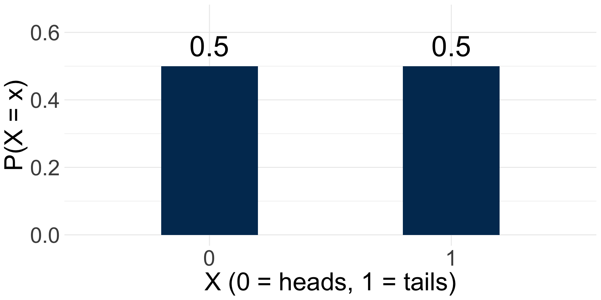
EDS 212: Day 5, Lecture 1
Basic probability theory, PDFs and PMFs, hypothesis testing intuition
August 7th, 2025
Why refresh probability?
Event space, event, and probability
✏️
Event space, event, and probability
Event space: The collection of all possible unique outcomes of an experiment or scenario. Also called the sample space.
Event: A possible outcome within the event space.
Probability: the likelihood that an event occurs.
The probability of event \(A\) occurring is written as \(P(A)\).
Two examples
1. Coin flip
2. Water sample contaminant test
Independent vs. non-independent events
✏️
Independent vs. non-independent events
Two events are independent if one occurring doesn’t change the probability of the other:
If knowing \(A\) occurred does change the probability of \(B\), the events are non-independent.
Conditional probability: For events \(A\) and \(B\), the probability of event \(B\) happening given that \(A\) is known to occur is denoted as \(P(B|A)\).
✏️ Are the following events independent or non independent?
Two consecutive coin flips.
Exceeding the nitrate limit in one day, then exceeding nitrate limit the next day.
Independent vs. non-independent events
Two events are independent if one occurring doesn’t change the probability of the other:
If knowing \(A\) occurred does change the probability of \(B\), the events are non-independent.
Conditional probability: For events \(A\) and \(B\), the probability of event \(B\) happening given that \(A\) is known to occur is denoted as \(P(B|A)\).
✏️ Are the following events independent or non independent?
Two consecutive coin flips are independent events. One has no influence on the other.
Exceeding the nitrate limit in two consecutive days at the same location would likely be non-independent.
Intersection, union, and complement
Given two events \(A\) and \(B\):
Intersection: \(A\cap B=\) denotes the events \(A\) and \(B\) co-occurring. In other words, these are AND probability statements.
Union: \(A\cup B=\) denotes at least one of the events happens (could be just one, or both). In other words, these are OR probability statements.
Complement: \(A'=\) denotes the event \(A\) does not occur.
✏️ Given the events \(A\) and \(B\), write in words what each of the following mean:
\(A=\) nitrate concentration in January 1st exceeds the safety limit
\(B=\) nitrate concentration in August 1st exceeds the safety limit
\(A \cap B\) =
\(A \cup B\) =
\(A'\) =
Intersection, union, and complement
Given two events \(A\) and \(B\):
Intersection: \(A\cap B=\) denotes the events \(A\) and \(B\) co-occurring. In other words, these are AND probability statements.
Union: \(A\cup B=\) denotes at least one of the events happens (could be just one, or both). In other words, these are OR probability statements.
Complement: \(A'=\) denotes the event \(A\) does not occur.
✏️ Given the events \(A\) and \(B\), write in words what each of the following mean:
\(A=\) nitrate concentration in January 1st exceeds the safety limit
\(B=\) nitrate concentration in August 1st exceeds the safety limit
\(A \cap B\) = nitrate concentration exceeds the safety limit on Jaunary 1st and August 1st
\(A \cup B\) = nitrate concentration exceeds the safety limit on January 1st, August 1st, or both
\(A'\) = nitrate concentration does not exceed the safety limit on January 1st
Basic probability
Probability of the intersection
\(P(A\cap B)=\) the probability of events A and B happening.
Calculation:
If \(A\) and \(B\) are independent: \(P(A\cap B) = P(A)\times P(B)\)
If \(A\) and \(B\) are not independent: \(P(A\cap B) = P(A)P(B|A)\)
Basic probability
Probability of the intersection
\(P(A\cap B)=\) the probability of events A and B happening.
Calculation:
If \(A\) and \(B\) are independent: \(P(A\cap B) = P(A)\times P(B)\)
If \(A\) and \(B\) are not independent: \(P(A\cap B) = P(A)P(B|A)\)
Probability of the union
Notation: \(P(A\cup B)=\) the probability of A or B happening.
Calculation: \(P(A\cup B)=P(A)+P(B)-P(A\cap B)\)
Basic probability
Probability of the intersection
\(P(A\cap B)=\) the probability of events A and B happening.
Calculation:
If \(A\) and \(B\) are independent: \(P(A\cap B) = P(A)\times P(B)\)
If \(A\) and \(B\) are not independent: \(P(A\cap B) = P(A)P(B|A)\)
Probability of the union
Notation: \(P(A\cup B)=\) the probability of A or B happening.
Calculation: \(P(A\cup B)=P(A)+P(B)-P(A\cap B)\)
Probability of the complement
Notation: \(P(A')=\) the probability of \(A\) not happening
Calculation: \(P(A')=1-P(A)\)
Population/sample, parameter/statistic
✏️
Population/sample, parameter/statistic
Population: The entire collection of things in a category you are trying to understand. You define the population.
Sample: A subset of the population, goal is to be representative of the population
Parameter: A characteristic of the population
Statistic: A characteristic of the sample
Examples
| Nitrate concentration | SB registered voters | Purple urchins (Channel Islands) | |
|---|---|---|---|
| Population | All nitrate concentration readings over the year | All registered voters in Santa Barbara County | All purple urchins in the Channel Islands Marine Sanctuary |
| Sample | Nitrate concentration from 20 water samples collected weekly | 500 voters surveyed by phone | 50 urchins counted along 10 dive transects |
| Parameter | True average nitrate concentration in the stream over the year | True % of all SB voters supporting a ballot measure | True average urchin density (per m²), sanctuary-wide |
| Statistic | Average nitrate concentration calculated from the 20 samples | % of the 500 surveyed voters supporting the measure | Average urchin density (per m²) across the 10 transects |
Examples
| ✏️ Your example | SB registered voters | Purple urchins (Channel Islands) | |
|---|---|---|---|
| Population | All registered voters in Santa Barbara County | All purple urchins in the Channel Islands Marine Sanctuary | |
| Sample | 500 voters surveyed by phone | 50 urchins counted along 10 dive transects | |
| Parameter | True % of all SB voters supporting a ballot measure | True average urchin density (per m²), sanctuary-wide | |
| Statistic | % of the 500 surveyed voters supporting the measure | Average urchin density (per m²) across the 10 transects |
Why do we sample?
Usually, we don’t have the resources (time, money, human power, etc.) to collect observations for an entire population.
✏️
Why do we sample?
Usually, we don’t have the resources (time, money, human power, etc.) to collect observations for an entire population. As a proxy, we try to collect a representative sample.
Then, we attempt to draw conclusions about the populations from which our samples were collected.
The statistic of the sample becomes an estimate for the true parameter in the population.
This process is called statistical inference.
Population vs. sample
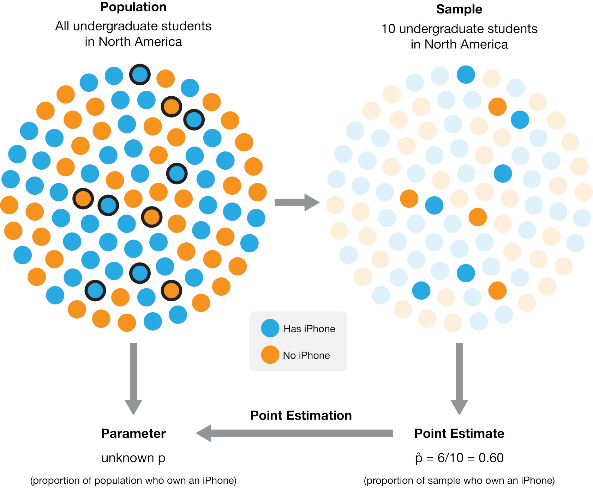
Bessel’s correction for variance
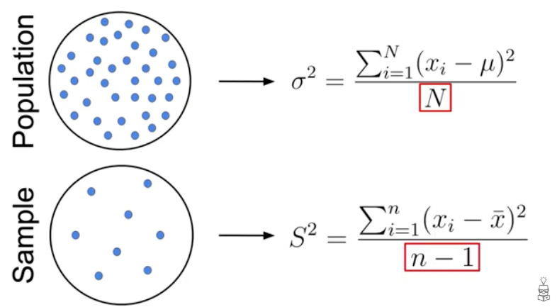
Screenshot from DataMListic video
Quantifying uncertainty
Once we use the sample to compute an estimate of the population’s true parameter: how can communicate how certain we are about that estimate?
One way of quantifying uncertainty around our statistics is using a…
Confidence interval: an interval based on a sample that, if we were to take multiple samples from the population and calculate the confidence interval from each, would contain the true population parameter X percent of the time.
Confidence interval example
Mean shark length is 8.42 \(\pm\) 3.55 ft (mean \(\pm\) standard deviation), with a 95% confidence interval of [6.45, 10.39 ft] (n = 15).
Confidence interval example
Mean shark length is 8.42 \(\pm\) 3.55 ft (mean \(\pm\) standard deviation), with a 95% confidence interval of [6.45, 10.39 ft] (n = 15).
What this DOES NOT mean: There is a 95% chance that the true population mean length is between 6.45 and 10.39 feet.
What this DOES mean: If we took a bunch of sets of samples from the population (all n = 15), then 95% of the time, the calculated mean would fall within this range.
This statement correctly describes the frequency with which we would expect CIs to capture the mean over many samples.
Let’s take a 5 minute break
image: Flaticon.com
Random variables
✏️
Random variables
A random variable is a variable whose value is a numerical outcome of a random process. Usually denoted with a capital letter (\(X\), \(Y\)), with specific values denoted lowercase (\(x\), \(y\)).
E.g. \(X=1\) if a coin flip lands tails, \(X=0\) if it lands heads.
E.g. \(Y=\) the nitrate concentration (mg/L) in a water sample.
This connects back to events from earlier: “the sample exceeds the nitrate limit” is really just the event \(Y > L\), where \(L\) is the limit.
Probability mass function (PMF)
✏️
Probability mass function (PMF)
For a discrete random variable \(X\), the probability mass function (PMF) gives \(P(X=x)\) for each possible value \(x\). e The sum of all values for the PMF must be 1: \[\sum_x P(X=x) = 1\]
Example: \(X=1\) if a fair coin lands tails, \(X=0\) if heads.

Example
✏️ A wildlife camera trap records 10 animal sightings in one week: 5 deer, 3 raccoons, 1 coyote, 1 owl. Let \(X\) = the species captured in a randomly selected photo. Find \(P(X=x)\) for each species and draw the PMF.
Solution
💡 Let’s see a solution!
| Species | Count | \(P(X=x)\) |
|---|---|---|
| Deer | 5 | 0.5 |
| Raccoon | 3 | 0.3 |
| Coyote | 1 | 0.1 |
| Owl | 1 | 0.1 |
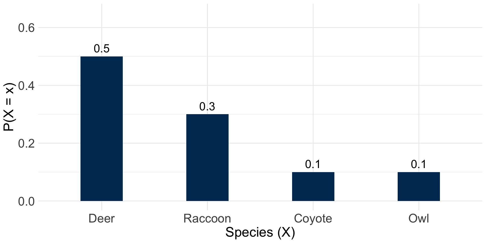
Exercise: your 212 survey
On day 1, you answered: “What best describes your relationship with math?”
| Response | Count |
|---|---|
| My mortal enemy | 0 |
| A family friend you dislike but your parents insist you invite to everything | 3 |
| The friend of a friend whose name you can never remember | 12 |
| Respectful co-worker you can have a drink with | 15 |
| My best friend! | 4 |
Exercise: solution
💡 Let’s see a solution!
1. \(X=\) the response a student gave to the survey question. It’s qualitative, and ordinal. The responses have an implied order, from worst to best relationship with math (much like a Likert scale).
| Response | Count | \(P(X=x)\) |
|---|---|---|
| Mortal enemy | 0 | 0/34 = 0.00 |
| Disliked family friend | 3 | 3/34 ≈ 0.09 |
| Forgettable acquaintance | 12 | 12/34 ≈ 0.35 |
| Respected co-worker | 15 | 15/34 ≈ 0.44 |
| Best friend | 4 | 4/34 ≈ 0.12 |
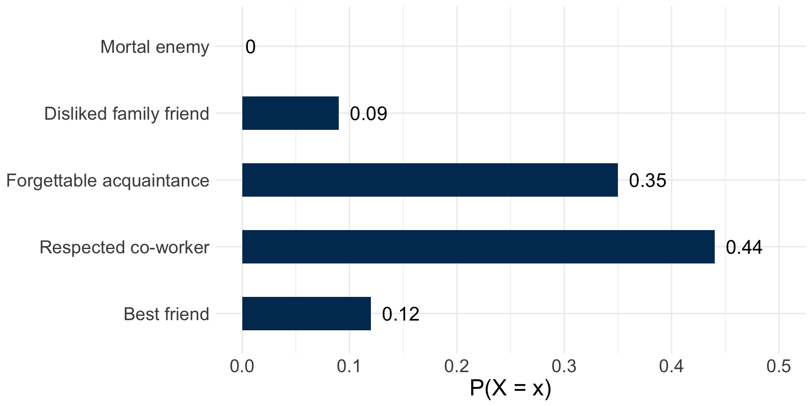
3. \(P(\text{positive}) = P(\text{respected co-worker}) + P(\text{best friend}) = \frac{15+4}{34} \approx 0.56\)
4. \(P(\text{not neutral}) = 1 - P(\text{forgettable acquaintance})= 1 - \frac{12}{34} \approx 0.65\)
Probability density function
✏️
Probability density function
Describes the relative likelihood of a continuous random variable taking on different values.
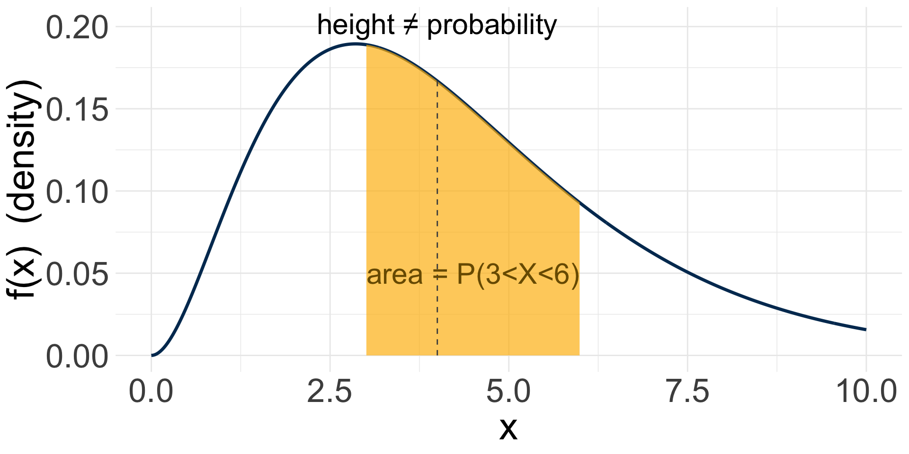
Check-in: nitrate concentration
Nitrate concentration (mg/L) in stream water samples, modeled as a continuous random variable \(Y\):
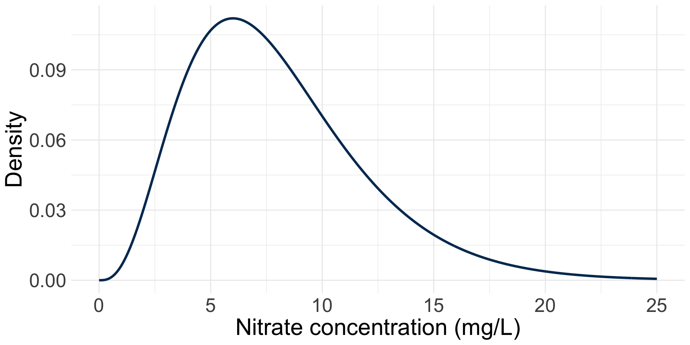
✏️ Suppose the safety limit is 10 mg/L. How would you find \(P(Y > 10)\)?
Check-in: nitrate concentration
Nitrate concentration (mg/L) in stream water samples, modeled as a continuous random variable \(Y\):
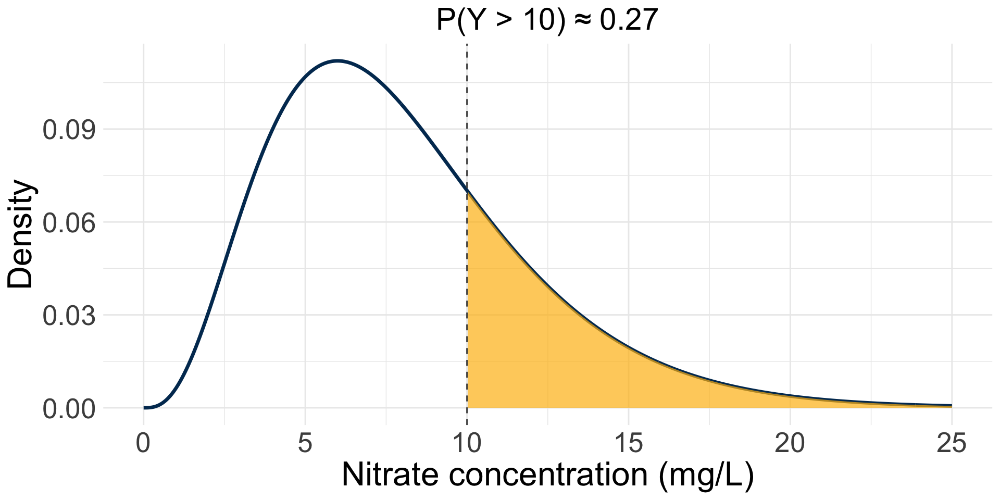
✏️ Suppose the safety limit is 10 mg/L. How would you find \(P(Y > 10)\)?
The shaded area is the answer: there is about a 27% chance a sample exceeds the safety limit.
Exercise: your typing speed test
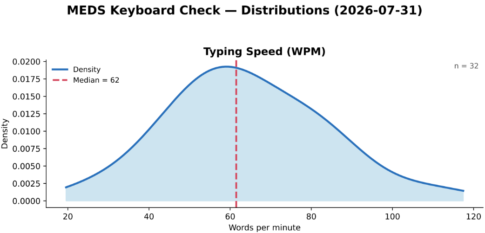
Exercise: solution
💡 Let’s see a solution!
1. Right-skewed: the peak sits to the left of center, and the curve has a longer, thinner tail stretching toward higher WPM values (up to ~120) than toward lower ones.
2. No. For a continuous random variable, the probability of any exact single value is 0. The height of the curve is the density, not a probability. Only the area under the curve over a range represents a probability.
3. The median splits the total area (=1) into two equal halves: 50% of the area lies to the left of 62 WPM, and 50% lies to the right.
Exercise: comparing speeds
✏️ The instructor’s own speed on this test was 71 WPM. Speeds of 80 WPM or higher are generally considered “fast.”
Exercise: solution
💡 Let’s see a solution!
1. Yes. Since 71 WPM is greater than the median (62 WPM), more than half the area under the curve lies to the left of 71. Meaning more than half the class types slower than 71 WPM. So it’s more likely than not that the instructor is faster than a randomly chosen student. Notice we can say this with confidence using only the median, without needing to estimate any area by eye.
2. A minority. Both the median (62) and the peak of the curve sit well below 80, so the region to the right of 80 covers noticeably less than half the total area.
The normal distribution
✏️
The normal distribution
The normal distribution is a symmetric, bell-shaped PDF, fully described by two parameters:
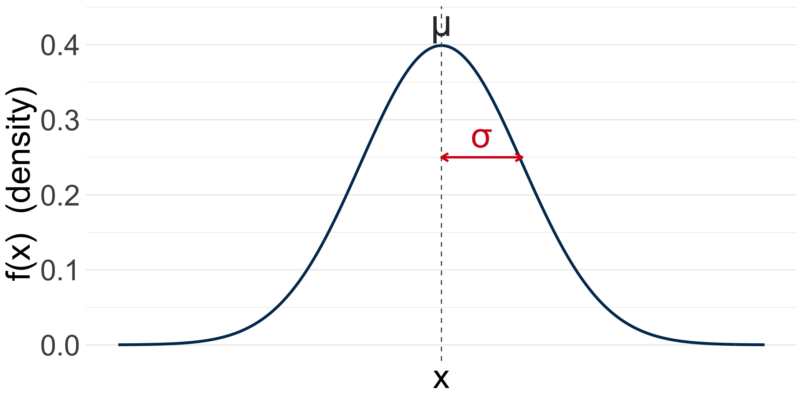
What is a null hypothesis?
✏️
What is a null hypothesis?
A null hypothesis (\(H_0\)) is the claim that the effect being studied does not exist. It is a hypothesis that proposes that there is no statistically significant difference between the data or variables being studied.
If the null hypothesis is true, any observed difference is due to chance alone.
What is a hypothesis test?
It asks the question
If a null hypothesis is true, what is the probability that your data outcome (e.g. mean, value, etc.) or something more extreme would have occurred by random chance?
Is that so unlikely (is the probability low enough), that you think you have sufficient evidence to reject the null hypothesis? Or not?
Hypothesis testing: building intuition, continued
You’ll learn about hypothesis testing in EDS 222. Let’s just build a bit more intuition here.
A common question: are means from two samples so different (considering data spread and sample size) that we think we have enough evidence to reject a null hypothesis that they were drawn from populations with the same mean?
Caveat, assumptions, caveat (EDS 222)…
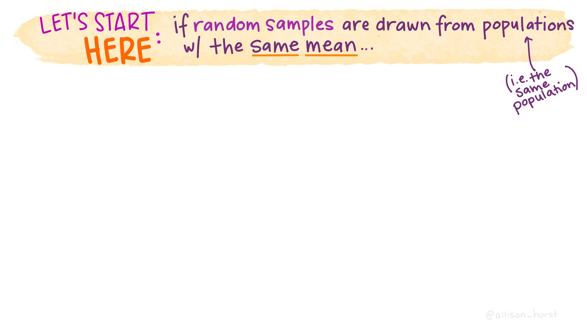
Artwork by Allison Horst
Artwork by Allison Horst
This course is an iterative effort

Allison Horst

Ruth Oliver

Nathan Grimes

Carmen Galaz García
Sam Shanny-Csik

Alessandra Vidal Meza
Cella Schnabel
We covered a lot!
Pleaes fill out the course evals!